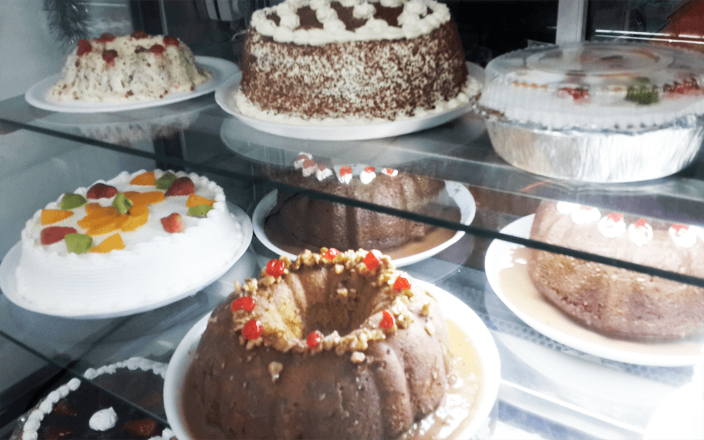

SABORES
Nuestra tienda ofrece una variedad de sabores.
Tradicionales y especiales.
En los tradicionales se agrupan los pasteles de Chocolate, Fresa, Nuez, Naranja, Vainilla, Durazno, Tres leches, entre otros
En los especiales se agrupan los pasteles de Mocca, Tiramisú, Queso crema con zarzamora, entre otros más.
El sabor de un pastel es como estar en las nubes, es como ver las flores brotar en la primavera; ese esquisito sabor
que hace soñar despiesta y decir... ¡ESTO ES DELICIOSO!